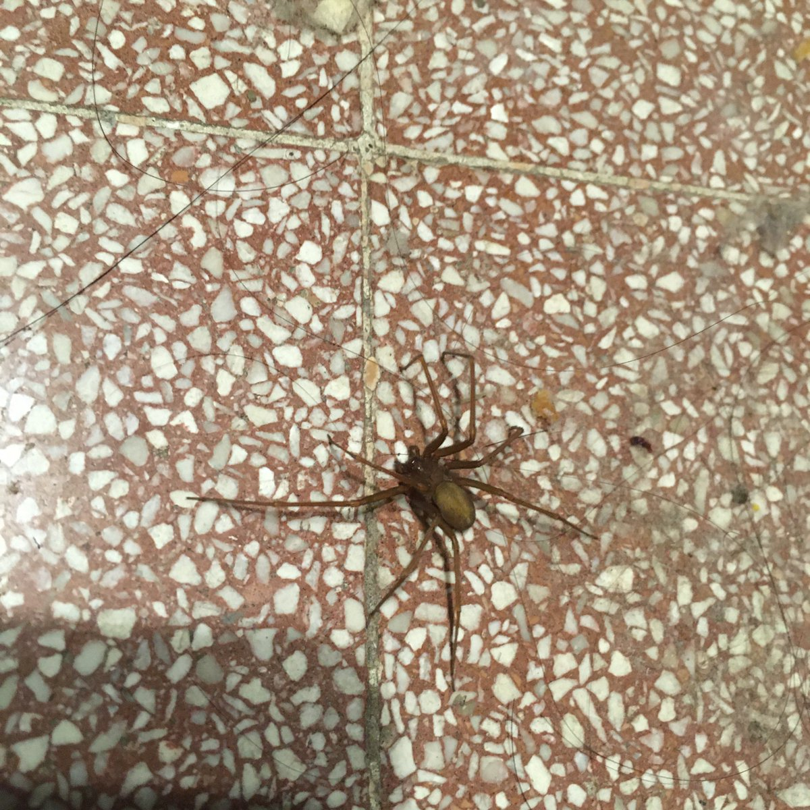

時璃風医詩🍥🌈
@hagishigure
@YaoYao38324 哦不…That’s warrior…

衣我以夜1314🌈
@YaoYao38324
昨天梳头，没看到梳子上趴着个大蜘蛛，握上去的时候才感觉手感古怪，看清是什么后被吓得猛然松手…
这小家伙倒好，不慌不忙地从桌子上吐丝荡了下去，消失在黑暗中
后来在reddit上查到好像是一种毒蜘蛛？我甚至还轻微挤压了它，还好它没咬我… 反正只要不烦扰我，就可以住在我屋里！ https://t.co/H1zGr8HJYp